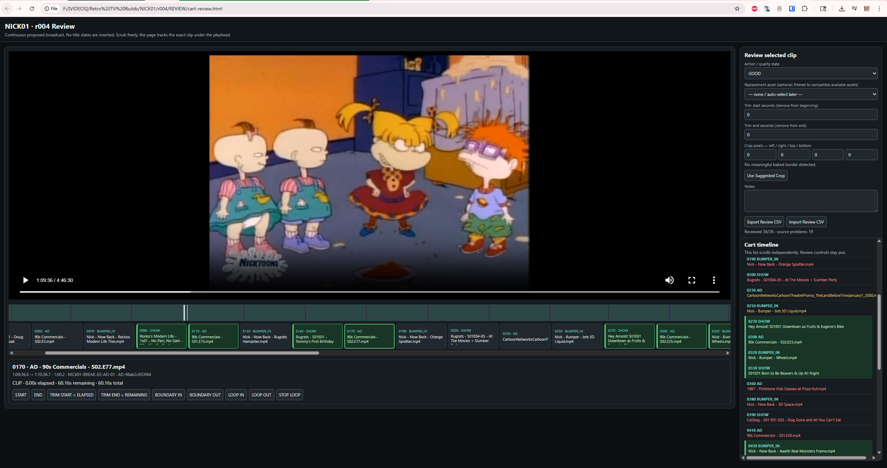

Last time I wrote about this project I had somehow managed to download roughly 131GB of old television bumpers, commercials, station IDs, promos, and assorted broadcast garbage.
Which was great.
Except now I had 131GB of television and absolutely no desire to manually assemble twenty USB drives one video at a time.
So naturally I built software for the tiny television.
Again.
The original idea was pretty simple: make little 4GB USB drives that behave like physical TV cartridges. Each one represents a fake period-correct station recording. Nickelodeon, Cartoon Network, Kids’ WB, Fox Kids, Boomerang, Sci-Fi, UPN, HBO, AMC, etc.
Not a drive full of one show.
An actual fake broadcast.
Episodes, commercials, bumpers, station IDs, promos, all in sequence.
Synthetic nostalgia.
The Cart Builder
The big thing I have been working on is what I am currently calling the Retro TV Cart Builder.
Instead of manually dragging files onto a flash drive, I can define a station and let the builder assemble a proposed broadcast from my library.
The first victim is:
NICK01Which will eventually become a physical USB cartridge labeled:
NICK1The cart has a permanent identity, but the builds are revisioned:
NICK01
├── r001
├── r002
├── r003
└── ...That turned out to be extremely useful because I can review a cart, hate something, fix it, and create another revision without destroying the history of how I got there.
Every source asset also has its own permanent ID, and every position in a cart has a permanent slot ID.
So the builder actually knows the difference between:
- the original media file
- the place it was assigned in a cart
- the revision where it was used
- whether it was good
- whether it was replaced
- whether it needs trimming
- whether it needs cropping
- whether its audio needs repair
This escalated quickly.
I Made A TV Review Station
The first generated NICK01 build was almost three hours long.
There was no way I was going to review that by opening 60+ files individually, so the builder now creates one continuous review video and a local HTML review page.
It has a proportional timeline for the entire fake broadcast, plus an equal-width clip strip so a six-second bumper is not represented by three pixels next to a 23-minute episode.
The sidebar shows every clip in order.
I can click any one of them and jump directly to it.
The review page also has controls for:
START
END
BOUNDARY IN
BOUNDARY OUT
LOOP IN
LOOP OUTThe boundary controls are especially useful because most of the problems happen between clips.
Does the commercial cut off too early?
Does the bumper make sense after the previous show?
Did I accidentally put a “Back to Doug” bumper before Angry Beavers?
Yes.
Yes I did.
The First Cart Was Way Too Much Television
The original break recipe was something like:
SHOW
NEXT PROMO
BUMPER OUT
COMMERCIAL
COMMERCIAL
BUMPER IN
STING
SHOWIt looked reasonable as a planning document.
It felt completely insane when actually watching it.
At one point I had a Nickelodeon clip announcing something like:
Up next, Rocko's Modern Life,
then My Brother and MeThen the cart played several more bumpers, six commercials, and eventually Angry Beavers.
We do not even have My Brother and Me.
Whoops.
That exposed two separate problems.
First, there were simply too many interruptions.
Second, some of my branding files did not have manually entered tags, so the builder was treating them as generic even when the filename itself very obviously named a show.
The planner now infers tags from the title, filename, notes, branding type, known show aliases, and phrases like:
Up Next
Coming Up
Back To
Now Back
ThenSo a file does not get to pretend it is generic just because I was too lazy to tag it.
I also changed the default station recipe to something much simpler:
SHOW
COMMERCIAL
NETWORK BUMPER
SHOWThat feels dramatically more like television and dramatically less like being trapped in an advertising dimension.
Reviewing Clips Actually Changes The Build
The review page has become less of a video player and more of a little quality-control workstation.
Every clip can be marked:
GOOD
REPLACE_THIS_CART
BAD_QUALITY
BAD_AUDIO
NEEDS_CLIPPED
NEEDS_CROP
DUPLICATE
WRONG_ERA
WRONG_NETWORKGOOD clips now turn green in the sidebar so I can actually tell what I have already reviewed.
That seems extremely obvious now.
It was not obvious before I spent hours reviewing a cart.
The builder also keeps the GOOD status when an unchanged clip survives into the next revision, so I do not have to re-review the exact same Rugrats episode because I replaced a six-second bumper forty minutes later.
Trimming Without Editing Anything
I really did not want to start modifying the original media archive.
So all repairs are non-destructive.
For trimming, the review page now displays a live counter for the current clip:
12.43s elapsed
17.62s remaining
30.05s totalIf the garbage at the beginning ends at 2.37 seconds, I can pause there and click:
TRIM START = ELAPSEDIf something ugly happens at the end, I can pause at the cut and use:
TRIM END = REMAININGThe values get stored in the cart manifest.
The original video remains untouched.
Then I Discovered The Black Border Problem
While reviewing NICK01 I noticed that some old captures had giant black borders baked into the video itself.
The normalizer was doing exactly what I told it to do:
“Preserve the image.”
Unfortunately, the black border technically was the image.
So now the builder uses FFmpeg’s cropdetect filter to analyze multiple parts of a source and suggest a crop.
Something like:
Left: 12
Right: 12
Top: 18
Bottom: 18The important word there is suggest.
Old television footage is weird. Letterboxing, black title cards, fades, VHS garbage, overscan, and random capture nonsense are all normal.
I absolutely do not trust an automatic process to start chopping pixels off several thousand archival files because it saw black for three seconds.
So the reviewer gives me a proposed crop and I approve it.
Again, the source file is never changed.
The crop just becomes another instruction stored in the manifest.
Audio Repair Too
I also added audio repair.
Originally I accidentally made BAD_AUDIO mean:
Throw this file away and replace it.
That was dumb.
What I actually wanted was:
Keep this clip, but try to fix the audio.
So BAD_AUDIO now requests a light processing pass with FFmpeg.
It currently does some gentle filtering, noise reduction, and then the same loudness normalization used everywhere else.
The cart targets roughly:
-16 LUFS
-1.5 dBTP
44.1 kHz stereoTrim, crop, and audio repair can all happen to the same clip in one render.
Still without touching the original.
Caching Saved My Sanity
The first review build takes a while because every source has to be normalized into the tiny TV’s known-good playback format:
H.264
618x480
30 FPS
yuv420p
AAC
44.1 kHz stereoI learned very quickly that I did not want to do that every time I moved one bumper.
So the builder keeps a cache of normalized clips.
If nothing about a clip changed, it gets reused.
If I add a trim, crop, audio repair, or replacement, only that clip gets a new cache key and gets rendered again.
I did briefly break this by changing the cache profile label even though the encoding profile itself had not changed.
That caused the entire cart to start re-rendering.
That was fun.
It is fixed.
The Physical Cartridge Part Is Getting Better Too
When the cart is finally approved, the builder creates the numbered MP4 files that actually go onto the USB drive.
It checks the total size before copying because these are 4GB cartridges and I would rather fail loudly than discover halfway through that the fake Nickelodeon station is 4.8GB.
The USB copy step now has progress bars for:
- the entire cartridge
- the individual file currently being copied
It also automatically renames the flash drive.
So:
NICK01becomes:
NICK1Which is an incredibly small detail that makes the fake cartridge feel much more real.
Nickelodeon Needed To Go To Bed
One thing NICK01 was missing was a proper sign-off.
I found a 1996 Nickelodeon “Good Night” sign-off and added a way to register individual handpicked branding clips without rescanning the entire 131GB archive.
Because rescanning 131GB every time I find one new bumper would be psychotic.
The cart builder can now register the clip, add it to the durable asset registry, assign it as NICK01’s sign-off, and append it to the end of the next cart revision.
So after hours of fake Nickelodeon programming, the station can actually say good night.
That makes me happy.
Where It Is Right Now
As of this update, I have completed a full review pass of NICK01 and exported the review state.
I have marked the bad clips, bad audio, trims, crops, and replacements.
The builder is currently chewing through the next corrected revision while I write this.
So this is absolutely not the “NICK1 is finished” post.
That one will hopefully be later today.
But we have crossed a pretty big line with this project.
What started as:
Put some cartoons on a tiny television.
has become:
Maintain a revisioned archival media database and automatically construct, repair, review, normalize, validate, and deploy fake period cable broadcasts onto physical USB cartridges.
That feels about right.
Next up:
Get NICK1 actually onto the flash drive.
Then plug it into the tiny television and find out what I broke.